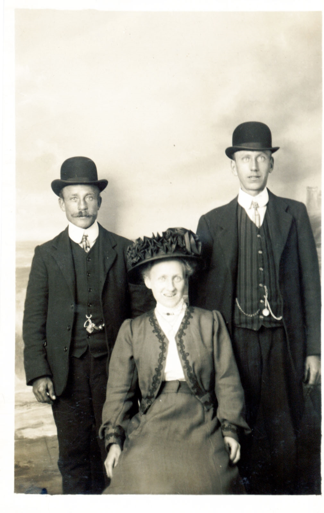
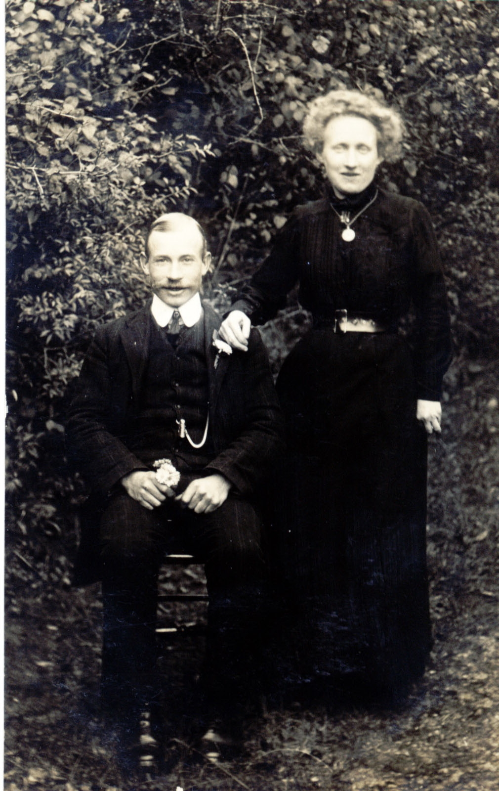

Louisa Knowler (née Chapman) 1882 - 1931
[ Home ] | [ Calendar ] | [ Surnames Index ] | [ Family History ]Louisa Chapman, the wife of Thomas William Knowler (the first cousin twice-removed on the mother's side of Nigel Horne), was born in Northbourne, Kent, England in 1882<span class="citation">1,2,3,4,5</span>. She married Thomas in Betteshanger, Kent, England on Aug 18, 1915<span class="citation">6</span>.</p><p>Throughout her life, she lived at her birthplace in 1891<span class="citation">1</span> and in 1901<span class="citation">2</span>; and in Betteshanger on Apr 2, 1911<span class="citation">3</span>. <p>She died on Apr 29, 1931 in Eastry, Kent<span class="citation">4</span>.
Citations
- 1891 England Census Online publication - Provo, UT, USA: The Generations Network, Inc., 2005.Original data - Census Returns of England and Wales, 1891. Kew, Surrey, England: The National Archives of the UK (TNA): Public Record Office (PRO), 1891. Data imaged from The National (Relation to Head of House: Daughter)
- 1901 England Census Online publication - Provo, UT, USA: The Generations Network, Inc., 2005.Original data - Census Returns of England and Wales, 1901. Kew, Surrey, England: The National Archives of the UK (TNA): Public Record Office (PRO), 1901. Data imaged from the National (Relation to Head of House: Daughter)
- 1911 England Census Online publication - Provo, UT, USA: Ancestry.com Operations, Inc., 2011.Original data - Census Returns of England and Wales, 1911. Kew, Surrey, England: The National Archives of the UK (TNA), 1911. Data imaged from the National Archives, London, England. (Marital Status: Single; Relation to Head of House: Daughter)
- England & Wales, Death Index: 1984-2005 Online publication - Provo, UT, USA: The Generations Network, Inc., 2007.Original data - General Register Office. England and Wales Civil Registration Indexes. London, England: General Register Office. © Crown copyright. Published by permission of the Cont
- England & Wales, FreeBMD Birth Index, 1837-1915 Online publication - Provo, UT, USA: The Generations Network, Inc., 2006.Original data - General Register Office. England and Wales Civil Registration Indexes. London, England: General Register Office. © Crown copyright. Published by permission of the Cont
- England & Wales, FreeBMD Marriage Index: 1837-1915 Online publication - Provo, UT, USA: The Generations Network, Inc., 2006.Original data - General Register Office. England and Wales Civil Registration Indexes. London, England: General Register Office. © Crown copyright. Published by permission of the Cont
Media
Louisa Chapman

Thomas Knowler - Louise Chapman

Thomas Knowler - Louisa Champan 2

England & Wales births 1837-2006 Transcription - BMD-B-1882-1-AZ-000101-363
England & Wales deaths 1837-2007 Transcription - BMD-D-1931-2-AZ-000524-070
Family Tree

Generated by Ged2Site. Last updated on Jul 20, 2025